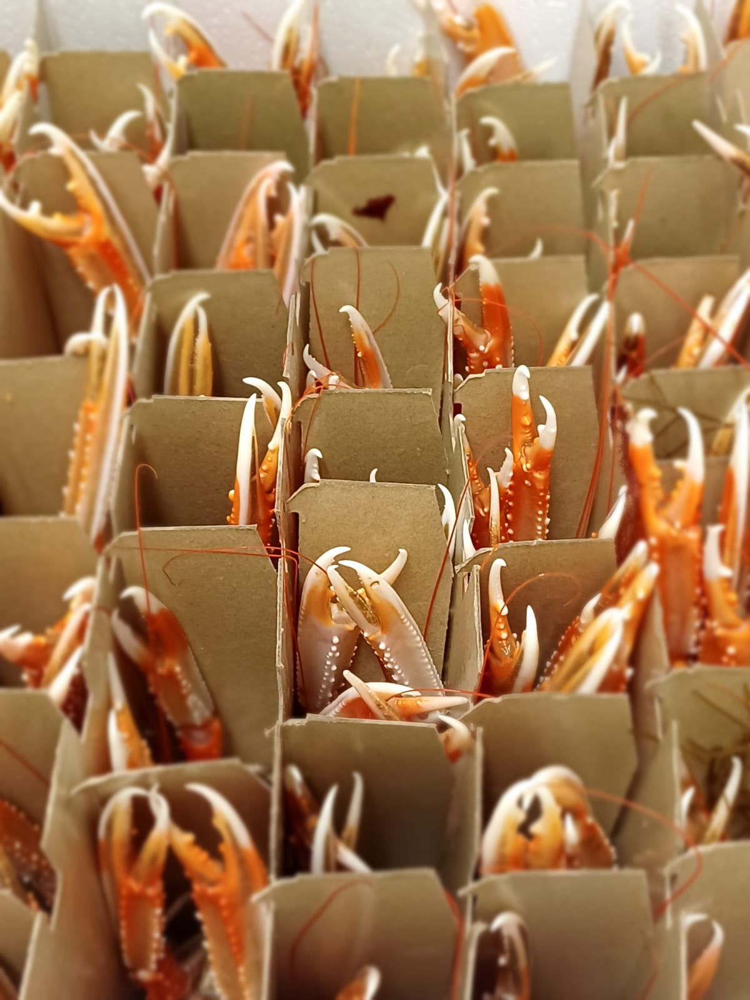
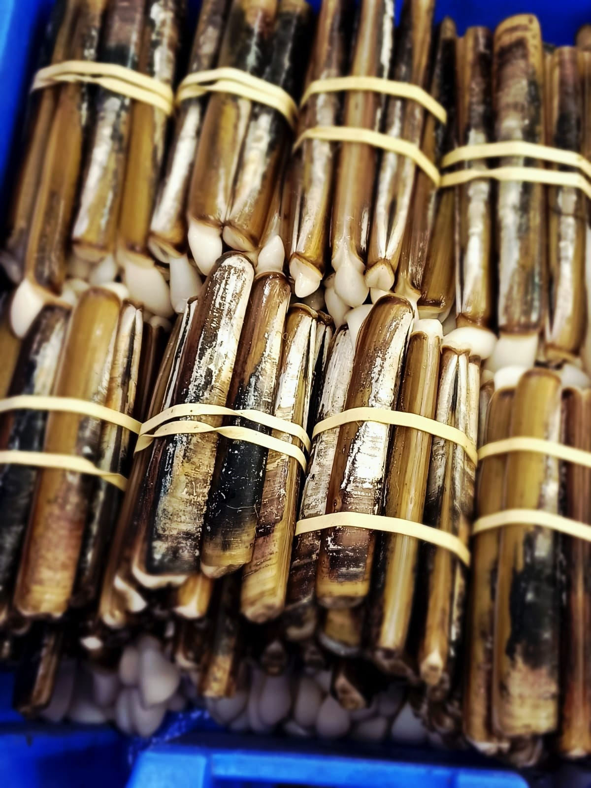
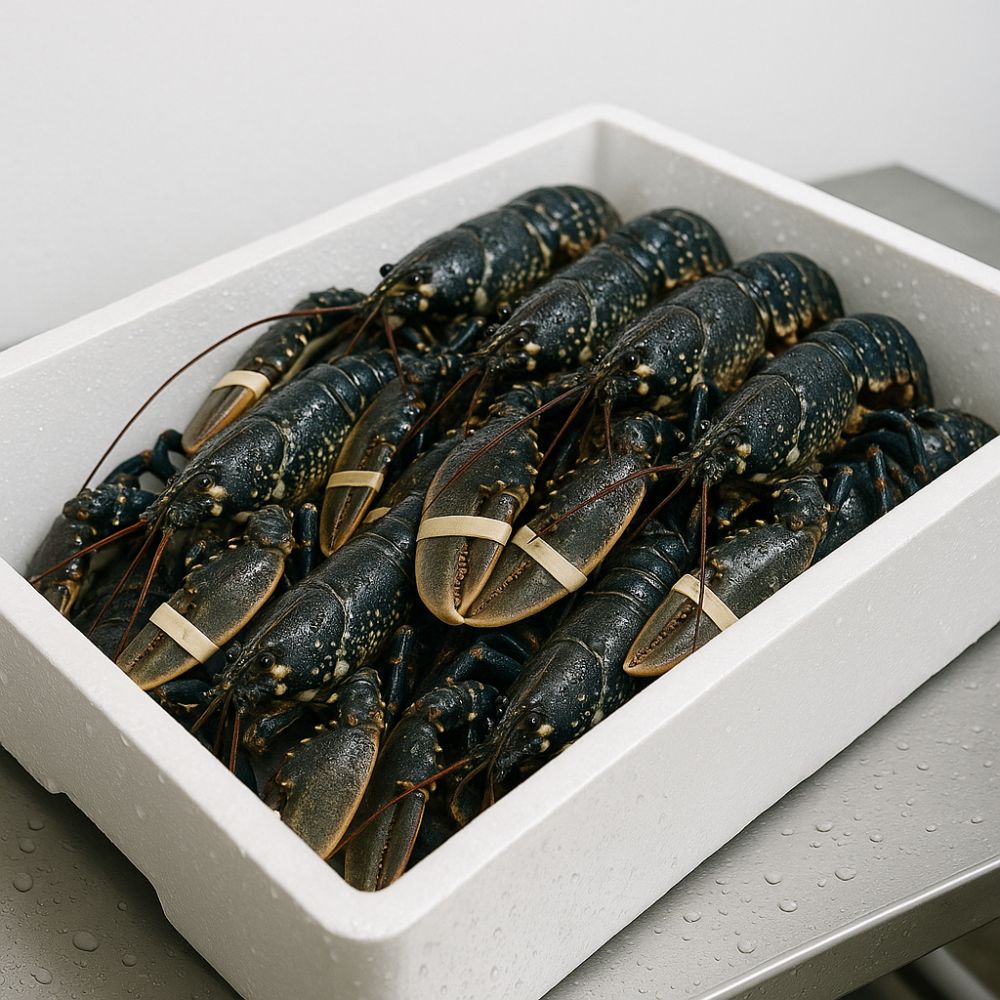

Our Products
Live Langoustines (Nephrops norvegicus)

Overview
Scottish live langoustines—also called Dublin Bay prawns—are prized for their delicate sweet flavor and tender, succulent texture. Harvested in creel pots off Scotland’s west coast, each is handled with care from sea to table.
Key Characteristics
- Fishing Method
- Creel pots—an eco-friendly approach minimizing habitat impact.
- Handling & Transport
- Stored in individual cells to protect from light, noise, and temperature.
- Sizes
- XXL, XL, L, M, S — Warmer months yield smaller catches.
- Availability
- Year-round, peaking Feb–Apr and quieter Sept–Nov.
- Culinary Uses
- Grill, boil, or add to pasta, risotto and salads.
- Traceability
- Each box is linked to a specific boat for full provenance.
Razor Clams (Ensis siliqua)

Overview
Our razor clams—long, sweet, and briny—are hand-dug from Scotland’s clean sand beds. Their unique shape and flavor make them a favourite for chefs across Europe. Caught to order, shipped alive.
Key Characteristics
- Harvesting Method
- Divers or hand-gathered—no mechanical dredging used.
- Transport & Storage
- Delivered live in insulated boxes with seawater gel packs.
- Sizes
- Large and Extra-Large — typically 12 to 15 cm.
- Availability
- Best from October to April, depending on tides and permits.
- Culinary Uses
- Flash-seared, grilled, or served raw with citrus.
- Traceability
- Harvest date and zone recorded for each shipment.
Scottish Lobsters

Overview
Harvested in Scotland’s pristine coastal waters, our lobsters boast sweet, succulent meat and a firm yet tender bite, with subtle oceanic notes.
Key Characteristics
- Habitat
- Cold, clean waters on hard ground in shallow Scottish seas
- Sustainability
- Protected by minimum carapace length regulations
- Seasonality
- Best enjoyed in –